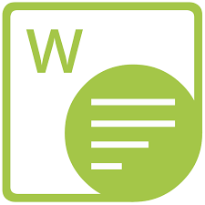

Hello! I am a student at the University of Guelph, majoring in Computer Science. I have recently completed an eight-month work term, and this website serves as a reflection on my experiences throughout.
Attending the Computer Science program at the University of Guelph has given me the opportunity to gain a general knowledge of the concepts related to the field. This includes Software Development, Operating Systems, and Mathematical/Statistical Theory.
Through my experience working as a Junior Programmer / Analyst (or Junior Developer), I have worked on a range of application. This begun as maintaining and improving internally used applications, as well as making client facing changes to web applications. As I gained more experience, I also worked on creating internal I.T. tools with the Blazor framework, and creating background services with the Dotnet framework.
I’ve also had the opportunity to work in various teams, learning to adapt quickly to new teammates, work-ethics, and technologies.
First National is one of the largest non-bank mortgage lenders in Canada. Servicing both commercial and residential mortgages, they cover a wide range of clients and situations.
They follow a “people-first” ideology. There are frequent chances to share ideas, even between departments. Team events are also encouraged! And although they do not specialize in Computer Science, First National has a growing I.T. department.
A fun fact about the I.T. department at First National is that Stephen Smith (one of the Co-Founders) created Merlin, an online portal still used by First National today! Also, the Toronto location is located directly beside the Scotiabank Arena, making it a great location to explore!
My time at First National was split into two work terms. Although these terms had no special significance to the position, they did happen to present unique opportunities:
When I began, the Dotnet Framework, SSMS and Vue.js were all unfamiliar technologies. As a result, this term was full of new learning opportunities. I gained experience writing C# applications, interacting with Q.A. databases, and working on web applications.
Throughout my first three weeks, I quickly realized that the work-place follows a different organization style than the classroom. There are greater expectations, and you may be asked to work on tasks that you have no prior experience with.
The I.T. department adopted the Agile workflow, with standup meetings, planning sessions, and retrospectives. Throughout the term, I set a goal to adapt to this workflow, to manage my tasks well. I also wanted to gain some confidence in speaking out during these meetings, and be more confident in general.
Technological LiteracyPrior to First National, I had an idea for a personal project that required a document generation portion. To my luck, I was assigned to the Document Generation team. There, I set a goal to learn about the various technologies, and how they could be implemented in my own solution.
Team-Work and CooperationIn the classroom, there are not many opportunities to work as part of a team. As a result, I hadn’t experienced working on a project with other developers. I planned to adapt to the teams workflow, ask questions, and make myself available in the event that someone needed my help.
Understanding Areas of InterestOne area I found myself thinking about throughout the term was determining what I did and did not like regarding the workplace. Determining this throughout my first term would help me to make more conscious decisions regarding workplaces in the future.

Time Spent:
2.5 Months
General Focus:
Create internal monitoring tool
Being a member of the Doc Gen Team at First National, I worked on systems that can reliably produce documents of various forms.
One of the first experiences I had was converting an existing document (a property document) to use a new generation technology. The reason for this conversion was to minimize dependencies, specifically a dependency on Microsoft Word. This both reduced maintenance and simplified future updates to the document. Later, I would use a similar technique on a different project.
Although the document only consisted of a few dynamic fields, there was an initial catch-up to understand all the technologies in use. I had the opportunity to explore SSMS and T-SQL, completing a Udemy course. Doing this allowed me to implement stored procedures, which made retrieving the document parameters very efficient. I also learned SSRS and Aspose.Words, two technologies that are used to generate documents. Being a C# library rather than a GUI application, I found Aspose.Words more well suited for the task (and my preferences). A similar library, Xceed’s DocX, is a technology I am implementing in my personal project.
Another experience on the Doc Gen team was diving into software security. An external party would look at First Nationals application (through automation) and report all potential security issues. I had the opportunity to look through these reports, and was to either determine their solutions, or why they are false positives. For any issues which I deemed valid, I used Regex matching to sanitize potentially malicious input, and to ensure input conformed to the expected format. I also worked closely with another developer to produce mitigation reports for the issues that were false positives.
One research opportunity was based on Testing and Mocking frameworks. Together, these kinds of frameworks can produce reliable testing suites with minimal dependencies. Experimenting with XUnit, NUnit, MOQ, NBSubstiture, and more, I found that XUnit + MOQ were very compatible. In fact, due to my recommendations, these technologies are being implemented in an upcoming project!
Throughout my time on the Doc Gen team, I also adapted well to sprints. I began keeping a daily agenda to break down my tasks, and I learned to more accurately size requirements.
Time Spent:
2.5 Months
General Focus:
Create internal monitoring tool
Text.
With the experience of term one, the second half of my time at First National was spent applying the skills I gained. As part of a larger project, I designed and developed two applications: a Windows Service, and a Blazor application. I also began creating a full stack application of my own, which forced me to apply my skills and learn new ones.
TODO
TODO
TODO
In progress: May 2025 - August 2025